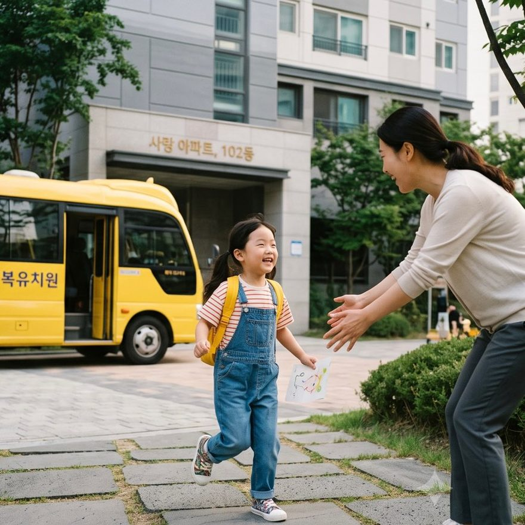
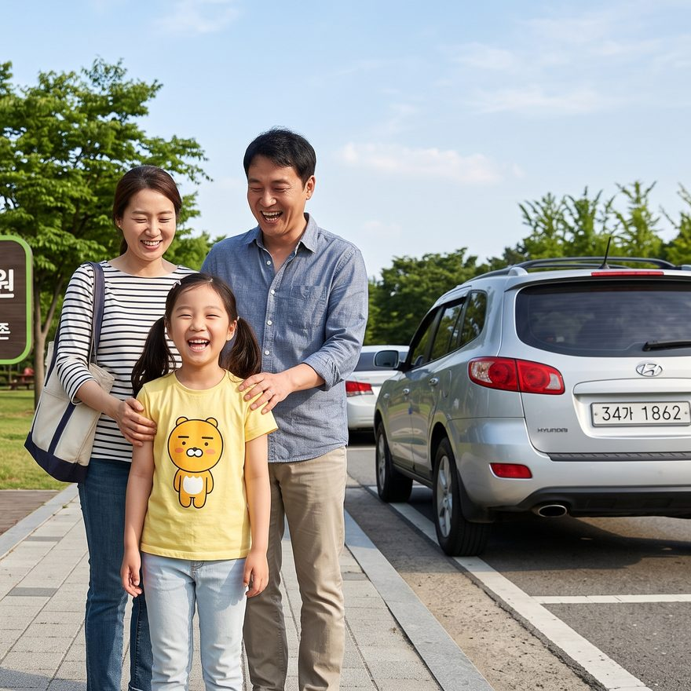
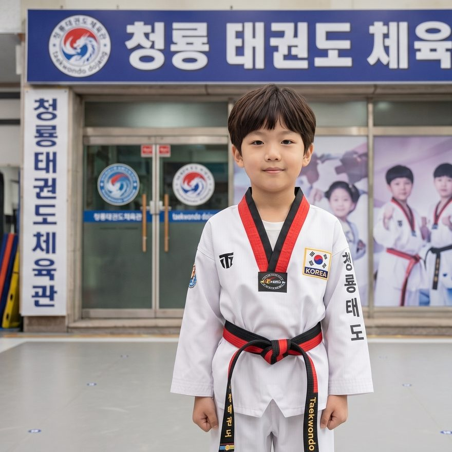

기관명 노출
좋아요 128개
mom_haewon 오늘 첫 등원! 우리 아들 씩씩하다 🎒
간판과 가슴 명찰에 어린이집 이름이 그대로 나와 있어요
2시간 전
팀 내부에서 보는 화면이에요.
전달받은 접근 코드를 넣어주세요.
좋아요 128개
mom_haewon 오늘 첫 등원! 우리 아들 씩씩하다 🎒
간판과 가슴 명찰에 어린이집 이름이 그대로 나와 있어요
2시간 전

동·호수 노출좋아요 94개
seoul_mom22 하원길에 달려오는 우리 딸 🥰
뒤 건물에 아파트 이름과 동이 적혀 있어요
5시간 전

번호판 노출좋아요 211개
daddy_junho 오랜만에 온 가족 나들이 🌳
차 번호판과 공원 이름이 같이 찍혔어요
1일 전

일정 노출좋아요 76개
playdate_with_us 매주 화요일 4시, 태권도 끝나고 한 컷 🥋
도장 이름에 요일·시간까지 겹치면 다음에 어디 있을지 예측돼요
3시간 전
사진·계정명·게시물 모두 예시예요 — 실제 아이 사진이 아니라 AI로 만든 이미지입니다
눈으로 다 확인하기 어렵다면, 사진 한 장이면 저희가 대신 확인해드려요.
사진으로 확인하기사진을 올리고 세 단계를 따라가면 돼요
사진을 올릴 필요 없어요. 지금까지 올린 게시물 스크린샷만 있으면 같은 요일·시간·장소가 반복되는지, 그래서 다음 게시물 시점이 예측되는지 짚어드려요.
어떻게 쓰나요
기능
간판·전화번호·지번처럼 위치를 특정할 수 있는 글자를 찾아냅니다. 브라우저 안 OCR과 Claude Vision을 함께 써서, 읽은 내용과 정확한 좌표를 모두 확보해요.
교복·원복·명찰·기관 로고처럼 아이가 어디에 다니는지 알려주는 것들을 잡아냅니다. 주소 다음으로 강한 위치 단서예요.
과거 게시물 스크린샷을 함께 넣으면 "매주 같은 요일·시간대" 같은 생활 패턴이 드러나는지 짚어드려요.
스마트 크롭, 배경 흐림, 주변색 채우기, AI 옷 바꾸기, AI 배경 교체. 무엇을 고칠지는 직접 고르실 수 있어요.
왜 안전한가
진단을 위해 외부로 보낼 때 얼굴을 먼저 검게 덮습니다. 원본이 필요한 기능(AI 보정 · 인터넷 이미지 검색)은 누를 때마다 따로 동의를 받아요.
AI에게 "아이를 바꾸지 마"라고 부탁하는 대신, 아이 영역을 마스크에서 아예 빼버립니다. 모델이 접근할 방법 자체가 없어요.
어떤 보정을 거쳐도 사진 비율이 바뀌지 않습니다. 잘라야 할 때도 아이를 자르느니 비율을 포기하고 알려드려요.
보정된 사진을 처음과 같은 검사에 한 번 더 통과시켜, 정말 위험이 사라졌는지 확인하고 결과를 보여드립니다.
자주 묻는 질문
진단에 필요한 순간에만 전송하고 따로 보관하지 않습니다. 대부분의 처리(크롭·흐림·주변색 채우기)는 아예 브라우저 밖으로 나가지 않아요.
아니요. 계정 연동도 비밀번호도 필요 없습니다. 과거 게시물 패턴을 보고 싶으실 때만 직접 캡처한 화면을 올려주시면 됩니다.
바뀌지 않습니다. 얼굴·머리카락·목은 마스크에서 제외해 AI가 접근할 수 없게 만들어 두었고, 보정 후 다시 검사해 얼굴이 그대로인지 확인합니다.
배경 흐림·자연스럽게 덮기는 브라우저 안에서 끝나요 — 사진이 기기 밖으로 나가지 않습니다. AI 옷 바꾸기·AI 배경 교체만 명시적으로 동의했을 때 원본 사진(얼굴 포함)이 저희 서버를 거쳐 외부 AI 서비스 fal.ai(FLUX 모델)로 전송돼요. 이때도 아이 영역은 마스크로 모델이 접근조차 못 하게 막거나(옷 바꾸기), 결과에서 원본 아이 사진으로 다시 덮어써서(배경 교체) 보호합니다. fal.ai는 전송된 사진을 모델 학습에 쓰지 않지만, "처리 후 바로 삭제"는 약속하지 않고 계정을 닫으면 30일 안에·2년 미사용 시 삭제한다고 밝혀요(여기서 쓰는 건 저희 팀 계정입니다). 진단(위험도 분석) 자체는 얼굴을 가린 사진만 Claude Vision으로 보내요. 장소 찾기의 인터넷 이미지 검색(Google Cloud Vision)은 같은 사진을 찾아내야 해서 원본을 보내며, 누를 때마다 먼저 동의를 받아요 — 구글은 즉시 응답 방식에서 사진을 디스크에 남기지 않고, 학습에 쓰지 않고, 검색 색인에도 넣지 않는다고 문서로 밝힙니다. 같은 기능의 AI 추측 단계에는 얼굴을 가린 사진만 보내요.
교복은 지우거나 잘라낼 수 없어서, 어느 기관인지 알 수 없는 평범한 옷으로 바꿔드립니다. 얼굴과 자세는 그대로예요.
완벽하지 않습니다. 글자를 놓치거나 엉뚱한 것을 잡을 수 있어서, 무엇을 고칠지 직접 고르실 수 있게 해두었습니다. 최종 판단은 부모님 몫이에요.